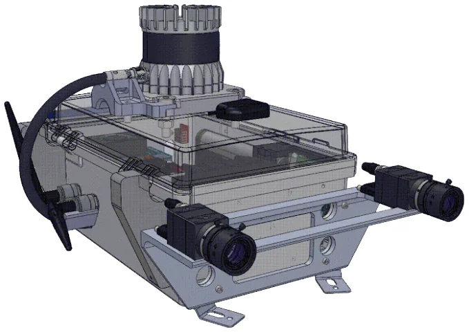
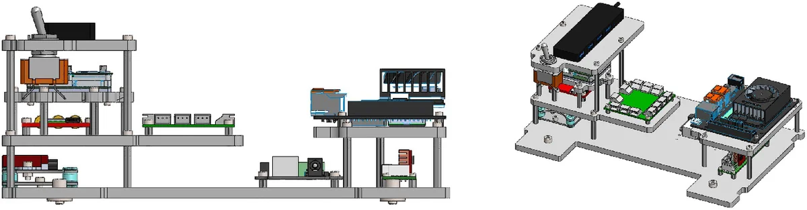

Platforms
Same sensing payload on five robots. Paper numbering: P0 Spot through P4 Go2.
| Payload | Robot | Sequences | Duration | Distance | Scenes |
|---|
Meet the platforms
Drag to orbit. Go2-W is the Go2 chassis with wheels.
Synchronized playback
One shared clock. Neutral ground-truth paths first, then payload-coloured trails on the 2D map and 3D height view.
Grey routes = full ground truth. Coloured trails follow the clock. The circle shows live radio links among payloads and the base station.
Campus point cloud
Reference map, height-coloured. Orbit to look through buildings and courtyards.
Payload
One enclosure on every robot. Orbit, explode the stack, or clip through the shell.


Stereo FLIR cameras, Ouster LiDAR, VectorNav IMU, u-blox ZED-F9T, Doodle Labs radio, Jetson Orin Nano.
Scenes in motion
Live clips from each payload across campus, buildings, basements, and elevators.
Hard cases
Conditions that break naive multi-robot SLAM assumptions. Select a case to inspect.
Data release
Bags, extracted sensors, shared-frame ground truth, and calibration. Download on Hugging Face.
payloadN/
bags/ merged or segment MCAPs
payloadN_sequences.json name, bag, start_ns / end_ns
extracted/
cam0/, cam1/ stereo PNG @ header.stamp
point_cloud/ Ouster sweeps (.npz)
imu/, gps/ CSV
ground_truth/ *_gt.tum in one campus map frame
calibration/
kalibr/ cam–IMU
refined/ LiDAR–cam (not yet for P1 Scout)
Folders use paper numbers. Recorder numbering differs for two robots: Scout is recorder payload3; Go2-W is recorder payload1.
Host clocks agree to a few milliseconds. Direct radio link to another node: 28–71% of monitored time.